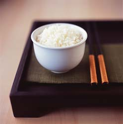
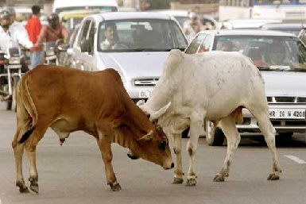
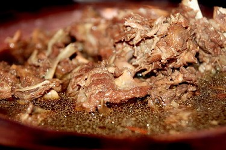
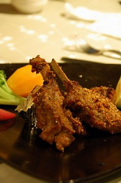
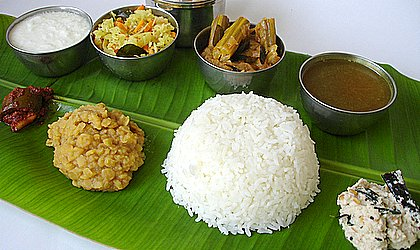
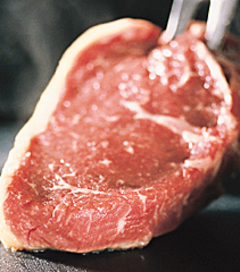
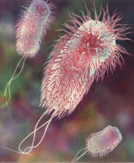

吃荤或吃素
冯冯
显宗信徒较多持素，显宗出家人必须守戒恪规吃素，密宗弟子未必持素，亦可能定期守斋。例如初一十五及佛菩萨诞辰斋期，显密在持素上的岐异，使许多初学佛人士困惑而莫知行从。
学佛是否必须吃素？这是一项争论不休的问题。正反两面的持论者，各有见地，多年来不少人士以此相向，这里不妨略作简单分析，以供参考。
从释迦牟尼佛创立佛教本旨来看，五戒着重戒杀生，所戒不单是戒人，还必须戒杀一切有情生命，包括各种动物畜牲，吃素是基于戒杀生，学佛人以慈悲为怀，守戒而不杀生，亦因此而不吃由杀生取得的食物。
印度与中国都是农业为主的社会，自古以来倚赖牛马农耕及 运输，因此不杀牛马，不吃牛肉，这是佛教尚未形成之前，自古以来的风俗传统。先佛时代，早有此戒，以牛为圣物，非自佛教开始，亦纯非宗教因素，实乃由实用经济之需要而禁屠牛，然后假托宗教以牛为圣，以兹保护，后世却演变为过份之崇拜圣牛。在印度社会，牛群横行过市，无人敢阻挡，而且予以膜拜，成为流弊，此 种过份崇拜，与戒杀原意，相去甚远，更与佛教无关。佛教主张戒杀，却无提倡崇拜牛只为神圣，佛教戒杀源于慈悲，印度拜牛，流为迷信。
 吃素也非佛教独创，自古以来，世界各地都有吃素群族，先佛时代，许多印度群族已经吃素，不少宗教也是吃素。例如：瑜珈教与耆那教，自古至今，都是吃 素。现代的印度教也吃素，原因一半是宗教观念，一半是贫穷。基督教有些教派也吃，香港一处基督教医院，医生病人均吃素，台北一家基督教疗养院也吃素，这却不是宗教原因，而是保健。现代西方社会，特别是年轻一代，趋向吃素的人士已经急剧增加，大多数是基于保健，而非宗教因素。西方提倡吃素的书刊，多达数万种，均以营养保健为出发点，说服力远胜于佛教的古老经论“吃肉恶因恶果三生恶报”。因为来生恶报无可见，今生吃肉患了高血压、心脏病、糖尿病、癌症，却是随时可以兑现，西方人并不信来生恶报，但是深知吃肉的今生现眼报应，所以很多人改为吃素，而且吃的是保健的营养素食，不是无益与不卫生的素食。
佛教密宗盛行地区，是西藏青海、蒙古、尼泊尔、锡金，这些都是崇山峻岭与高原，气候严寒，不宜农耕，只合畜牧。游牧民族自古以来不种农作，只以畜牧牛羊为生，逐水草而徙移，杀牛屠羊，以肉为主食。原始宗教，以燔祭牛羊献神为，佛教传入之后，未能改变其生活习惯与风俗，反而与之结合，形成含有浓厚原始宗教色彩的密教，西藏原始的苯教（黑教）的神秘特色与咒术，成 为密宗佛教的特色。游牧民族的肉食习惯，于今未改，今日西藏己在开发农业，成产蔬菜，但是藏人仍以肉食为主，未能接受素食。密教现已遍传世界各地，西方人趋之若鹜，多半 是被密教的神秘所吸引。西方人对于显教兴趣不大，信都较少，不及信密的热门。西方人信密教者不必茹素，吃素的西方人很少光因信显教而吃素，只是为了保健而不吃肉。
 了解密教吃荤肉的文化背景，就知他们吃肉是沿袭风俗而来。中东与阿拉伯地区也是畜牧社会，同样是吃肉的民族，蒙古与天山一带，也是吃肉为主的民族，吃素菜反而是无法负担的奢侈了。
佛陀显然并未硬性规定必须吃素，而且也说过在不毛之地特 别环境之下可以方便吃荤，但是祂还是希望弟子尽可能吃素，以存慈悲心，及恪守杀生之戒条，也说过允许弟子吃三净肉，但到祂入灭后就必须连三净肉也戒吃，这些话，可见于楞严经等经文，或者就是持荤的信徒的依据：“佛陀准吃三净肉”及准许在不能种植生产蔬菜的地方吃肉。
这是方便法门，可是忘了佛说祂不在世则弟子连三净肉也须戒吃，持荤者坚持佛准吃三净肉，所谓三净肉，就是：“不是我亲手杀生，不是为我而杀，不是眼见其被杀”，再加上“自死之肉”、“被遗弃”之肉，都可以方便吃它，合称“五净肉”。持素者则认为佛陀在世准许吃肉，是祂神力所化生之肉，并非真肉。而且佛陀讲明在祂入灭之后，弟子不得再吃肉。
 持荤与持素，各有依据，各执一端，相持不让，拿现代社会来说，亲手杀鸡鸭或宰屠猪牛，已经少见，市场出售的肉，都是别人屠宰干净的肉，可列为三净肉或五净肉，所以持荤者不必担心犯戒。可是持素者说虽是吃三净肉或五净肉，也会负上因果报应，楞严经不是说人吃了羊肉，死后来生会变为羊被他人宰吃吗？吃了鱼也会变鱼吗？
荤素两派，引经据典，但都以 乎是断章取义，未能贯通佛陀原意──佛心是基于慈悲而戒杀生，因戒杀而不吃荤肉。假如认清此一佛心本旨，那就不必斤斤计较什么神力化肉和吃羊变羊了。那些神话其实并非佛陀原说，只是后世弟子所 追加在经内的，在往昔神我时代，宗教总不免带有很多神话色彩，现代人很难接受的。其实佛陀当初也并未设立佛教为一个宗教，祂讲的是人生道理与守戒行善，后世弟子不断增添神话上去，把祂这位伟大的老师衍化为超自然的神，表面看是升了格，实 际上， 是贬了级。
持荤者又说，释迦牟尼也是吃肉的，而且祂游方托钵化缘， 施主给什么祂就吃什么，给肉吃肉，给素吃素，不可能坚持吃素，这些观点，似是而非。
佛陀与众弟子，弘法足迹，都在印度，是个自古以来都贫穷到极点经常在饥馑边缘的地区，一般人民穷到两餐难继，何来肉类布施？恐怕连米饭都布施不出吧？农民要靠牛马耕田及运输，羊奶养儿，怎会舍得杀牛羊牲口？养猪是要卖给肉贩去赚钱的，怎会随便杀猪自吃？鸡蛋也是要换钱的，怎敢杀鸡自吃？又怎可能以之布施供养佛陀？至于王公贵人富裕之家，若是信佛，必知佛陀不准杀生，他们怎取用荤肉去供养佛陀与徒众？若说佛陀吃肉，祂在做太子时代，在宫中什么精美肉食没吃过？倒要去出家乞食吃肉？所以，硬说佛陀吃肉，这是厚诬之至。此种厚诬，可 能因为佛陀曾准许弟子吃三净肉吧？
 持荤者又说，西安大雁塔石碑有石刻与记载，兹塔高入云表，时有野雁撞塔而死，堕于塔下，寺僧拾而烹食之。由此可见，唐代僧人是有吃肉的，也有不吃肉的，唐代并未规定出家人必须吃素，出家必须吃素，是宋朝以后的风气，最先是由唐代以后南朝梁武帝所大力提倡的。
现代显宗出家人持素者占大多数，但也不是人人持素的。密宗出家人到大多数持荤及定期守斋。著名的嘉瓦仁波切曾经茹素二三十年，后来接受医师劝告而放弃吃素，他访问美国，带有北京厨师为他料理膳食，他对记者们说：因为有肝病，医生叫他吃牛肉，又说他的北京厨师光会做红烧牛肉，别的都不会做。这段轶闻，登载在美国的中英文报刊上，曾经引起不少争论，有人认为以嘉瓦仁波切的尊崇地位，不应吃荤。其实，吃荤吃素，是各人自己的选择，何必多管他人闲事呢？
 佛光会每年在美加台湾举行的大法会与僧伽大会，供设的伙食，有荤有素，素食在一边长桌，荤肉在另一边桌上，任由来宾自己选吃。数千来宾，不少是密宗信徒，来自西藏与尼泊尔和泰国的僧侣，另外是来自大陆与台港南洋的出家人。佛光会供施素食，也供肉食，任由客人方便取食，各人随意随缘，这是很开明的方便接引。不过，极端的持素者就有烦言批评了，持素者坚持吃肉吃荤 必有恶报，持荤者说不吃肉难道肉会还原复生？吃的不过是已死的三净肉罢了，不会有因果。持素者吃三净肉也有因果，持荤者说现代社会屠宰业与罐头肉类屠宰千千万万牛猪鸡 鸭，人家还发了大财，也没见到什么恶报。英国疯牛风波屠杀了两千多万牛匹，又怎么说呢？吃一点三净肉得什么大罪恶？持素者说因果终必有报应，今生不报来生报。
对现代人说，什么来生报应，什么吃了羊肉之后人死为羊， 吃了鱼就死后为鱼，这些观念是无法说服现代人的。佛教持素者若以此种轮回观念来推行吃素，收效可疑，因为拿不出证据来证明，来生太渺茫，谁看见？可是，若拿今生现世报应来说，就有说服力量了。
什么是吃肉的现世报？吃肉多了，动物性脂肪过多，胆固醇 过高，形成高血压、心脏病、糖尿病、血管栓塞，中风。烤炸肉类含有致癌物质，引起癌症，肉牛的消化系统内含有恶性大肠菌，人吃了未煮熟的牛肉会被大肠菌（E.COLI）毒侵致死。猪牛肉的旋毛虫会寄生在人体内，不洁的鸡鸭肉会使人中毒死亡，不新鲜的海产会使人中毒，日本、台湾、香港、美加、欧洲......经常发现肉类食品病菌或病毒引起的集体中毒死亡，由 吃肉而致尿酸过高引起痛风症，就更是普遍现象。这些就是吃肉吃荤的现世报！来生报应不可知，今生现世报应却是不可忽视！
吃荤吃素，是各人的自由，佛陀也并无硬性规定必须吃素。 对于现代人来说，养生保命，现世报应是比来生轮回更动听的！佛教现代弘法，在吃素方面，与其守旧多讲来生报应轮回，还不如多讲现世的养生保命吧！
原载《佛网》网站
2000 年 ── 2002 年